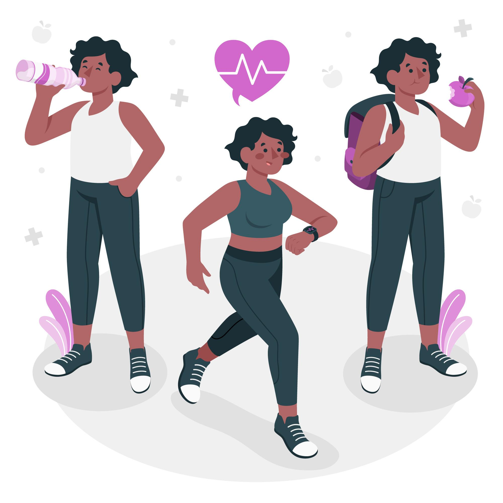

Rotina de exercícios físicos
Alongamento/ Aquecimento
10 a 15 minutos de caminhada + alogamento de pernas, costas e braços
OBS: Preferencialmente pela manhã.
Exercicios
3 minutos de prancha isometrica (6 repetições de 30 segundos cada, com 30 segundos de descanso),
3 séries de agachamento (de 10 a 15 repetições),
3 séries de agachamento sumo(de 10 a 15 repetições),
3 séries de abdominal (de 10 a 15 repetições).
Cuidados Pessoais
Beber mais água, evitar comida industrializada, fazer mais exercícios físicos.